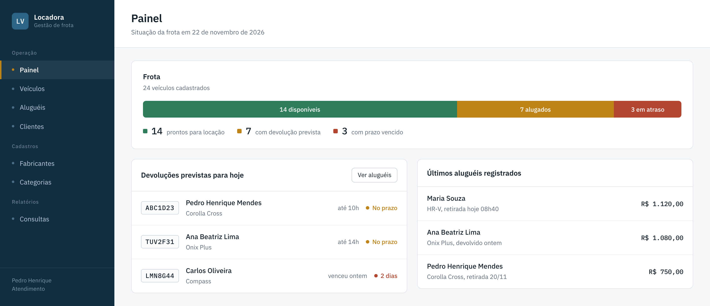
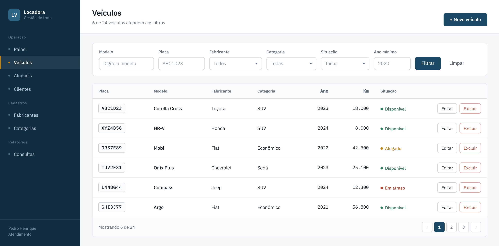
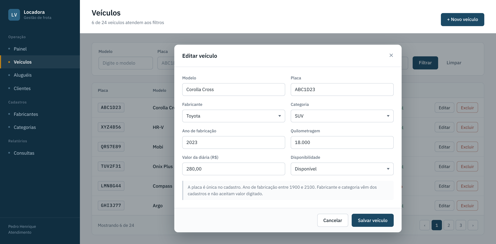
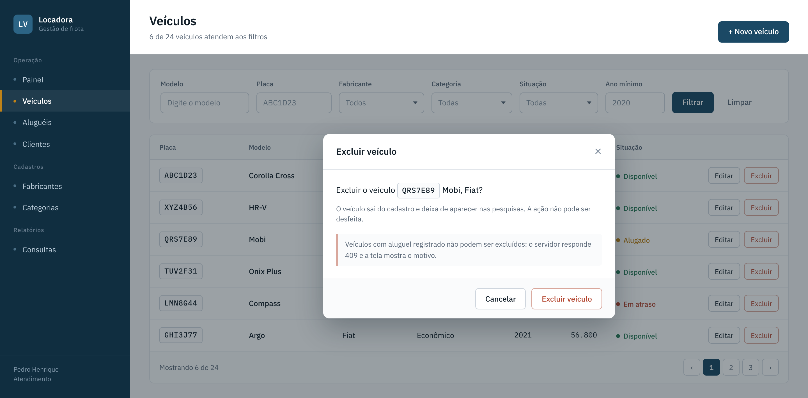
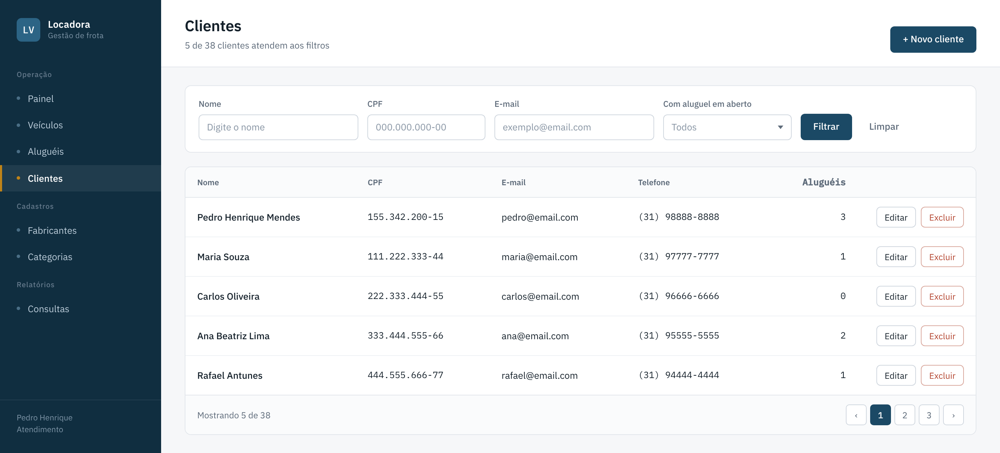
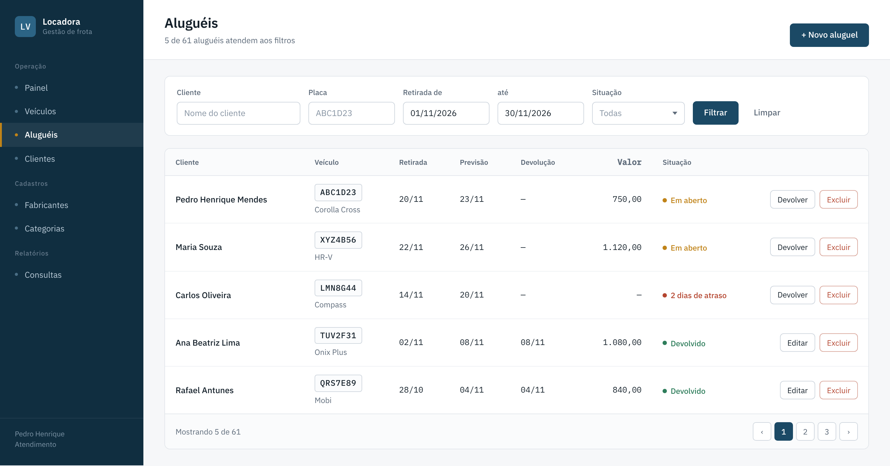
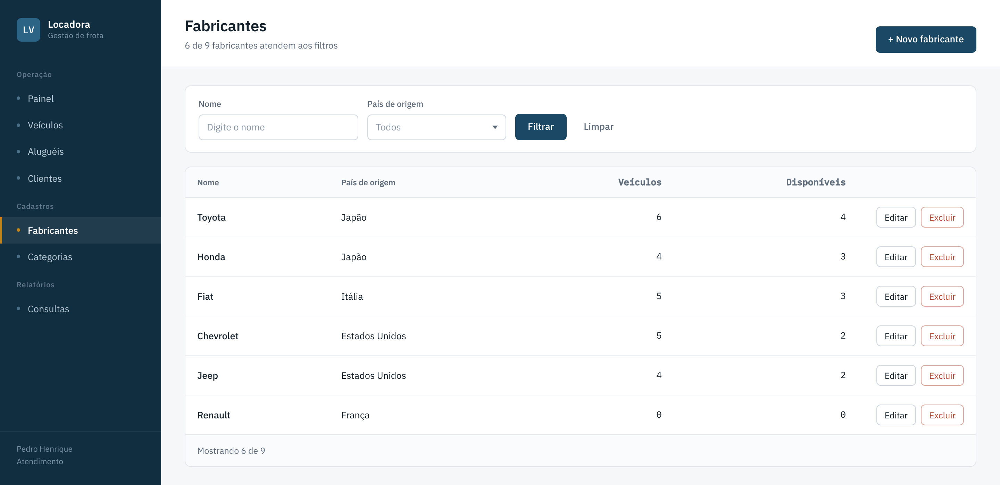
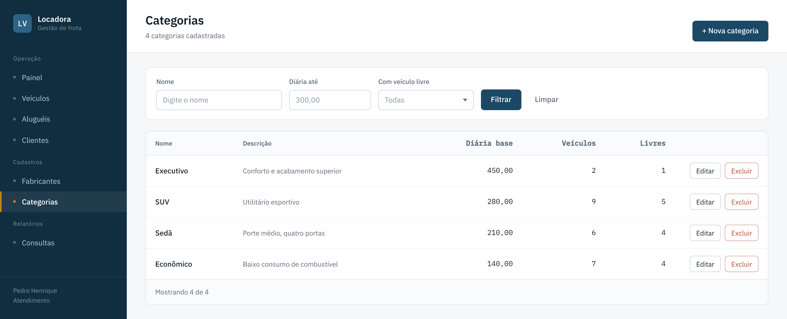
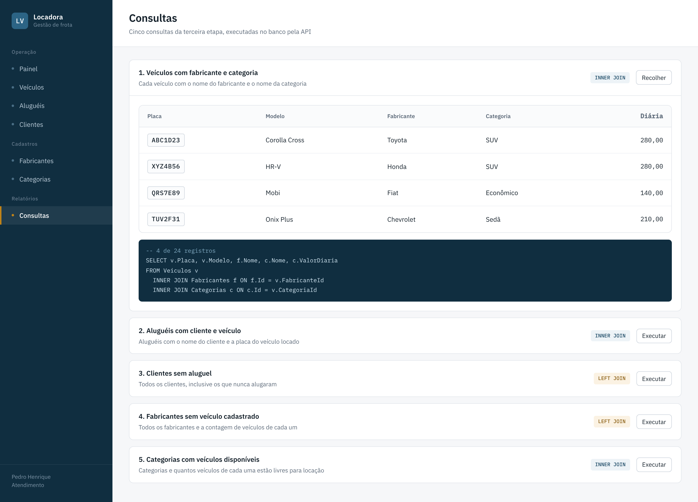

Trabalho Prático 2. Nove telas em alta fidelidade, na largura de 1440 px.
Cada tela tem a versão em HTML na pasta telas/ e a imagem em png/.
Tela inicial. A faixa superior resume a frota e as duas listas mostram o que precisa de ação hoje.

Listagem de veículos com seis campos de filtro e as ações de editar e excluir em cada linha.

Mesma janela para cadastrar e editar. O título muda entre "Novo veículo" e "Editar veículo".

Confirmação de exclusão. O mesmo modelo de janela vale para as outras entidades.

Listagem de clientes com filtros por nome, CPF, e-mail e situação do aluguel.

Listagem de aluguéis com filtros por cliente, placa, período de retirada e situação.

Listagem de fabricantes com filtros por nome e país de origem.

Listagem de categorias com filtros por nome, valor da diária e disponibilidade.

As cinco consultas da terceira etapa. A primeira aparece executada, com o resultado e o SQL.
